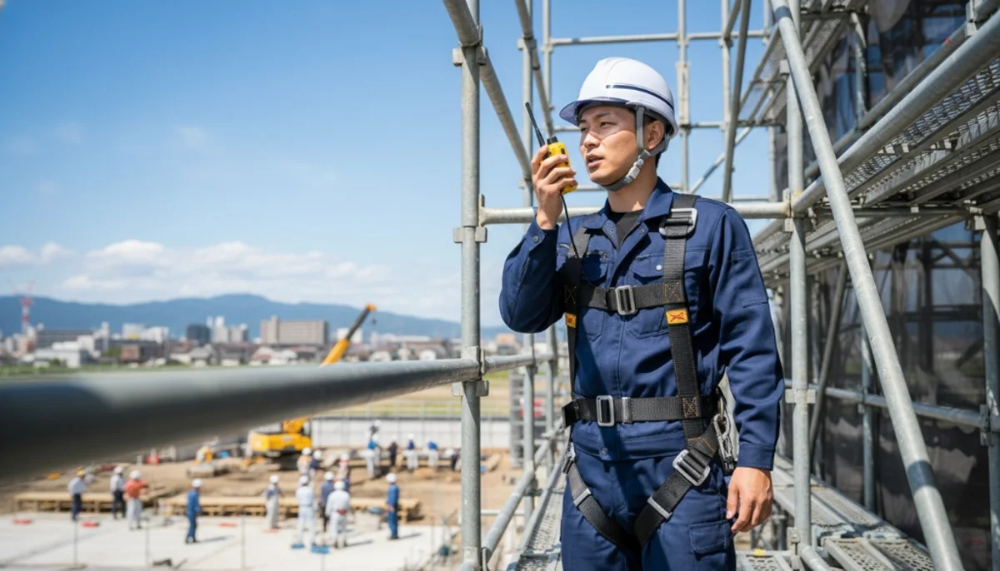
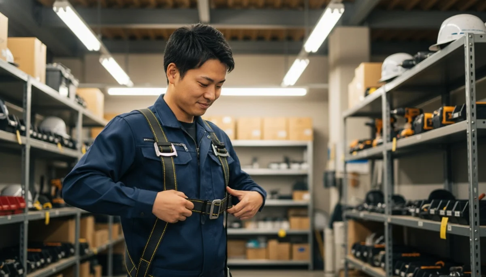
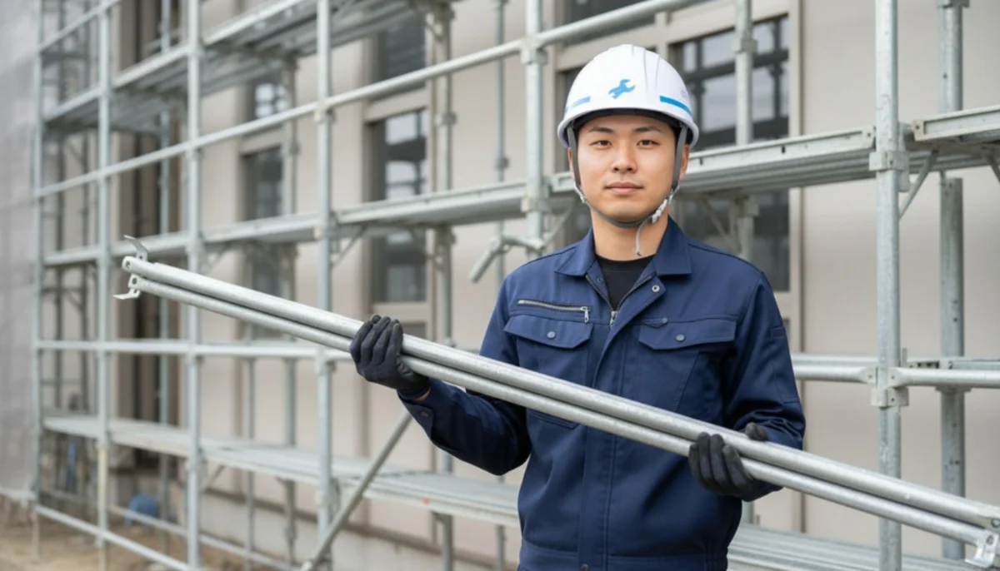

INTERVIEW
社員の声
「残業なし、給料は前職の倍。人生が変わった。」
家族の笑顔が増えた、ホワイトな建設現場。
入社前、どんなことで悩んでいましたか？
前職は製造業の工場で、毎日同じライン作業を繰り返していました。給与は手取りで18万円に届かないくらい。毎月カツカツで、結婚を真剣に考える彼女がいたものの、「この給料じゃ一生養えない…彼女を幸せにできない」と毎晩のようにベッドの中で悩んでいました。
とにかく「もっと稼げる仕事」を探していたのですが、デスクワークは向いてないし、かと言って土木や鳶職って「親方に殴られながら安月給でこき使われる、休みすらない」という強烈なブラックな印象があって避けていました。
蒼翔に応募する際、不安だったことは？
「未経験の初任給が月給30万〜」という求人を見て、「絶対に嘘だ、ブラックなんじゃないか」と疑いました（笑）。残業代が絶対に出ないとか、高価な道具を月々の給料から天引きで買わされるんじゃないかって。
しかも、HPを見ると「完全週休二日制」と書いてあって、余計に怪しいですよね。でも彼女のためにとにかく稼ぎたくて、ダメ元でLINEからエントリーして面接に行きました。

入社の「決め手」は何でしたか？
面接でいきなり社長から「最新のフルハーネス（安全帯）と腰道具一式、全部会社で用意してるから」と新品の機材を見せられたんです。全部揃えたらウン十万円もするやつです。それを未経験の僕にポーンとくれて。
「ウチは日給制のブラックな稼ぎ方はやめた。会社として本気でお前の人生背負うから、現場で安全に作業して早く帰ってやれ」と言われ、その言葉の重みに震えました。迷わず入社を決意しました。

今、どんなやりがいを感じていますか？
入社して数年が経ち、国家資格である「とび技能士」などを会社の全額負担で取得しました。今は職長として自分のチームを率いて、現場の指揮を取っています。
年収は前職の倍以上になり、先日ついに満を持して彼女と結婚できました！何より、現場は17時にスッと終わってiPadで日報を出すだけなので、18時には家で奥さんと手料理を食べています。愛する家族を守れる「プロの職人」になれた誇りでいっぱいです。

他の社員インタビューを見る